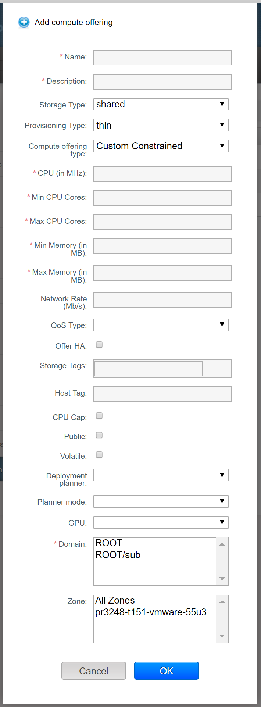

In addition to the physical and logical infrastructure of your cloud and the CloudStack software and servers, you also need a layer of user services so that people can actually make use of the cloud. This means not just a user UI, but a set of options and resources that users can choose from, such as templates for creating virtual machines, disk storage, and more. If you are running a commercial service, you will be keeping track of what services and resources users are consuming and charging them for that usage. Even if you do not charge anything for people to use your cloud – say, if the users are strictly internal to your organization, or just friends who are sharing your cloud – you can still keep track of what services they use and how much of them.
Service Offerings, Disk Offerings, Network Offerings, and Templates¶
A user creating a new instance can make a variety of choices about its characteristics and capabilities. CloudStack provides several ways to present users with choices when creating a new instance:
- Service Offerings, defined by the CloudStack administrator, provide a choice of CPU speed, number of CPUs, RAM size, tags on the root disk, and other choices. See Creating a New Compute Offering.
- Disk Offerings, defined by the CloudStack administrator, provide a choice of disk size and IOPS (Quality of Service) for primary data storage. See Creating a New Disk Offering.
- Network Offerings, defined by the CloudStack administrator, describe the feature set that is available to end users from the virtual router or external networking devices on a given guest network. See Network Offerings.
- Templates, defined by the CloudStack administrator or by any CloudStack user, are the base OS images that the user can choose from when creating a new instance. For example, CloudStack includes CentOS as a template. See Working with Templates.
In addition to these choices that are provided for users, there is another type of service offering which is available only to the CloudStack root administrator, and is used for configuring virtual infrastructure resources. For more information, see Upgrading a Virtual Router with System Service Offerings.
Scope¶
Since version 4.13; compute offerings, disk offerings, network offerings and VPC offerings can be scoped to (made available in) combinations of specific domain(s) and zone(s) or to all domains and zones.
Existing offerings can be updated via the UI or via the updateServiceOffering, updateDiskOffering, updateNetworkOffering and updateVpcOffering API calls, by passing “domainid” and “zoneid” parameters.
A root admin can change a domain-specific offering to a public one via the UI, or by passing “domainid=public” in the updateServiceOffering API call. To make a zone-specific offering available for all zones, a root admin should include “zoneid=all” in the API call or carry out the operation via the UI.
Domain-admins have a limited scope to update service or compute offerings. They cannot change the zone(s) in which the offerings are available, and they cannot change the name, display text or sort-key for offerings. They can change the domain(s) which an offering is available in, if the offering’s scope is limited to only domains and/or subdomains for which the domain admin is the admin.
Compute and Disk Service Offerings¶
A service offering is a set of virtual hardware features such as CPU core count and speed, memory, and disk size. The CloudStack administrator can set up various offerings, and then end users choose from the available offerings when they create a new VM. Based on the user’s selected offering, CloudStack emits usage records that can be integrated with billing systems.
Compute offerings may be “fixed”, “custom constrained” or “custom unconstrained”.
In fixed offering the Number of CPUs, Memory and CPU frequecy in each service offerings are predefined by the CloudStack administrator, in custom unconstrained offerings they are left undefined so that the end-user can enter their own desired values when creating a guest instance. Since 4.13 custom constrained offerings have been introduced to allow the end-user to enter the number of CPUs and memory required within constraints set by the administrator. The constraints can be different for different custom constrained offerings. This is useful to reduce the number of offerings the CloudStack administrator has to define; Instead of defining a compute offering for every imaginable combination of values that a user might want, the administrator can define offerings that provide some flexibility to the users and can serve as the basis for several different VM configurations.
A service offering includes the following elements:
- CPU, memory, and network resource guarantees
- How resources are metered
- How the resource usage is charged
- How often the charges are generated
For example, one service offering might allow users to create a virtual machine instance that is equivalent to a 1 GHz Intel® Core™ 2 CPU, with 1 GB memory at $0.20/hour, with network traffic metered at $0.10/GB.
CloudStack separates service offerings into compute offerings and disk offerings. The compute service offering specifies:
- Guest CPU (optional). If not defined by the CloudStack administrator, users can pick the CPU attributes.
- Guest RAM (optional). If not defined by the CloudStack administrator, users can pick the RAM.
- Guest Networking type (virtual or direct)
- Tags on the root disk
The disk offering specifies:
- Disk size (optional). If not defined by the CloudStack administrator, users can pick the disk size.
- Tags on the data disk
To support the custom offerings, usage events register events for dynamically assigned resources. Usage events are registered when a VM is created from a custom compute offering, and upon changing the compute offering of a stopped or running VM. The values of the parameters, such as CPU, speed, RAM are recorded.
Creating a New Compute Offering¶
{kind=link}
To create a new compute offering:
- Log in with admin privileges to the CloudStack UI.
- In the left navigation bar, click Service Offerings.
- In Select Offering, choose Compute Offering.
- Click Add Compute Offering.
- In the dialog, make the following choices:
- Name: Any desired name for the service offering.
- Description: A short description of the offering that can be displayed to users
- Storage type: The type of disk that should be allocated. Local allocates from storage attached directly to the host where the system VM is running. Shared allocates from storage accessible via NFS.
- Provisioning type: The type of disk that should be allocated. Local
- Compute Offering Type: The amount of freedom that the end user has to customise the compute power that their instance has when using this compute offering. The options are; Fixed offering - user has no ability to customise, Custom constrained - user has some latitude to customise the compute within parameters set by the offering, Custom unconstrained - user can set any values that they wish ‘Custom constrained’ is recommended over ‘Custom unconstrained’ as it enables the admin to set some boundaries.
- # of CPU cores: The number of cores which should be allocated to a system VM with this offering. If ‘Custom constrained’ is checked, the admin will be asked to enter the minimum and maximum number of CPUs that a user can request. If ‘Custom unconstrained’ is checked, this field does not appear as the user will be prompted to enter a value when creating their guest instance.
- CPU (in MHz): The CPU speed of the cores that the guest instance is allocated. For example, “2000” would provide a 2GHz CPU clock speed. This setting only used if CPU cap is selected. This value is also passed to the hypervisor as a share value to give VMs relative priority when a hypervisor host is over-provisioned. If ‘Custom unconstrained’ is checked this field does not appear as the user will be prompted to enter a value when creating their guest instance.
- Memory (in MB): The amount of memory in megabytes that the system VM should be allocated. For example, “2048” would provide a 2 GB RAM allocation. If ‘Custom constrained’ is selected, the admin will be asked to enter the minimum and maximum amount of RAM that a user can request. If ‘Custom unconstrained’ is selected, this field does not appear as the user will be prompted to enter a value when creating their guest instance.
- Network Rate: Allowed data transfer rate in MB per second.
- Disk Read Rate [1]: Allowed disk read rate in bits per second.
- Disk Write Rate [1]: Allowed disk write rate in bits per second.
- Disk Read Rate [1]: Allowed disk read rate in IOPS (input/output operations per second).
- Disk Write Rate [1]: Allowed disk write rate in IOPS (input/output operations per second).
- Offer HA: If yes, the administrator can choose to have the system VM be monitored and as highly available as possible.
- QoS Type [1]: Three options: Empty (no Quality of Service), hypervisor (rate limiting enforced on the hypervisor side), and storage (guaranteed minimum and maximum IOPS enforced on the storage side). If leveraging QoS, make sure that the hypervisor or storage system supports this feature.
- Custom IOPS [1]: If checked, the user can set their own IOPS. If not checked, the root administrator can define values. If the root admin does not set values when using storage QoS, default values are used (the defauls can be overridden if the proper parameters are passed into CloudStack when creating the primary storage in question).
- Min IOPS [1]: Appears only if storage QoS is to be used. Set a guaranteed minimum number of IOPS to be enforced on the storage side.
- Max IOPS [1]: Appears only if storage QoS is to be used. Set a maximum number of IOPS to be enforced on the storage side (the system may go above this limit in certain circumstances for short intervals).
- Hypervisor Snapshot Reserve [1]: For managed storage only. This is a value that is a percentage of the size of the root disk. For example: if the root disk is 20 GB and Hypervisor Snapshot Reserve is 200%, the storage volume that backs the storage repository (XenServer) or datastore (VMware) in question is sized at 60 GB (20 GB + (20 GB * 2)). This enables space for hypervisor snapshots in addition to the virtual disk that represents the root disk. This does not apply for KVM.
- Storage Tags: The tags that should be associated with the primary storage used by the system VM.
- Host Tags: (Optional) Any tags that you use to organize your hosts
- CPU cap: Whether to limit the level of CPU usage even if spare capacity is available.
- Public: Indicate whether the compute offering should be available to all domains or only some domains. Choose Yes to make it available to all domains. Choose No to limit the scope to one or more specific domains.
- isVolatile: If checked, VMs created from this service offering will have their root disks reset upon reboot. This is useful for secure environments that need a fresh start on every boot and for desktops that should not retain state.
- Deployment Planner: Choose the technique that you would like
CloudStack to use when deploying VMs based on this service
offering.
- First Fit: places new VMs on the first host that is found having sufficient capacity to support the VM’s requirements.
- User Dispersing: makes the best effort to evenly distribute VMs belonging to the same account on different clusters or pods.
- User Concentrated: prefers to deploy VMs belonging to the same account within a single pod.
- Implicit Dedication: will deploy VMs on private infrastructure that is dedicated to a specific domain or account. If you choose this planner, then you must also pick a value for Planner Mode. See Dedicating Resources to Accounts and Domains.
- Bare Metal: is used with bare metal hosts. See Bare Metal Installation in the 安装指南.
- Planner Mode: Used when ImplicitDedicationPlanner is selected
in the previous field. The planner mode determines how VMs will be
deployed on private infrastructure that is dedicated to a single
domain or account.
- Strict: A host will not be shared across multiple accounts. For example, strict implicit dedication is useful for deployment of certain types of applications, such as desktops, where no host can be shared between different accounts without violating the desktop software’s terms of license.
- Preferred: The VM will be deployed in dedicated infrastructure if possible. Otherwise, the VM can be deployed in shared infrastructure.
- GPU: Assign a physical GPU(GPU-passthrough) or a portion of a physical GPU card (vGPU) to the guest VM. It allows graphical applications to run on the VM. Select the card from the supported list of cards. The options given are NVIDIA GRID K1 and NVIDIA GRID K2. These are vGPU capable cards that allow multiple vGPUs on a single physical GPU. If you want to use a card other than these, follow the instructions in the “GPU and vGPU support for CloudStack Guest VMs” page in the Cloudstack Version 4.4 Design Docs found in the Cloudstack Wiki.
- vGPU Type: Represents the type of virtual GPU to be assigned to a guest VM. In this case, only a portion of a physical GPU card (vGPU) is assigned to the guest VM. Additionally, the passthrough vGPU type is defined to represent a physical GPU device. A passthrough vGPU can directly be assigned to a single guest VM. In this case, a physical GPU device is exclusively allotted to a single guest VM.
- Domain: This is only visible When ‘Public’ is unchecked. When visible, this controls the domains which will be able to use this compute offering. A multi-selection list box will be displayed. One or more domains can be selected from this list box by holding down the control key and clicking on the desired domains.
- Zone: This controls which zones a compute offering is available in. ‘All zones’ or only specific zones can be selected. One or more zones can be selected from this list box by holding down the control key and clicking on the desired zones.
- Click Add.
| [1] | (1, 2, 3, 4, 5, 6, 7, 8, 9) These options are dependant on the capabilities of the hypervisor or the shared storage system which the VMs are on. If the hypervisor or underlying storage don’t support a particular capability in the offering, the setting will have no effect. |
Creating a New Disk Offering¶
To create a new disk offering:
- Log in with admin privileges to the CloudStack UI.
- In the left navigation bar, click Service Offerings.
- In Select Offering, choose Disk Offering.
- Click Add Disk Offering.
- In the dialog, make the following choices:
- Name: Any desired name for the disk offering.
- Description: A short description of the offering that can be displayed to users
- Custom Disk Size: If checked, the user can set their own disk size. If not checked, the root administrator must define a value in Disk Size.
- Disk Size: Appears only if Custom Disk Size is not selected. Define the volume size in GB (2^30 1GB = 1,073,741,824 Bytes).
- QoS Type [2]: Three options: Empty (no Quality of Service), hypervisor (rate limiting enforced on the hypervisor side), and storage (guaranteed minimum and maximum IOPS enforced on the storage side). If leveraging QoS, make sure that the hypervisor or storage system supports this feature.
- Custom IOPS [2]: If checked, the user can set their own IOPS. If not checked, the root administrator can define values. If the root admin does not set values when using storage QoS, default values are used (the defauls can be overridden if the proper parameters are passed into CloudStack when creating the primary storage in question).
- Min IOPS [2]: Appears only if storage QoS is to be used. Set a guaranteed minimum number of IOPS to be enforced on the storage side.
- Max IOPS [2]: Appears only if storage QoS is to be used. Set a maximum number of IOPS to be enforced on the storage side (the system may go above this limit in certain circumstances for short intervals).
- Hypervisor Snapshot Reserve [2]: For managed storage only. This is a value that is a percentage of the size of the data disk. For example: if the data disk is 20 GB and Hypervisor Snapshot Reserve is 200%, the storage volume that backs the storage repository (XenServer) or datastore (VMware) in question is sized at 60 GB (20 GB + (20 GB * 2)). This enables space for hypervisor snapshots in addition to the virtual disk that represents the data disk. This does not apply for KVM.
- (Optional)Storage Tags: The tags that should be associated with the primary storage for this disk. Tags are a comma separated list of attributes of the storage. For example “ssd,blue”. Tags are also added on Primary Storage. CloudStack matches tags on a disk offering to tags on the storage. If a tag is present on a disk offering that tag (or tags) must also be present on Primary Storage for the volume to be provisioned. If no such primary storage exists, allocation from the disk offering will fail..
- Public: Indicates whether the disk offering should be available to all domains or only some domains. Choose Yes to make it available to all domains. Choose No to limit the scope to one or more specific domains.
- Domain: This is only visible When ‘Public’ is unchecked. When visible, this controls the domains which will be able to use this compute offering. A multi-selection list box will be displayed. One or more domains can be selected from this list box by holding down the control key and selecting the desired domains.
- Zone: This controls which zones a disk offering is available in. ‘All zones’ or only specific zones can be selected. One or more zones can be selected from this list box by holding down the control key and selecting the desired zones.
- Click Add.
| [2] | (1, 2, 3, 4, 5) These options are dependant on the capabilities of the hypervisor or the shared storage system which the VMs are on. If the hypervisor or underlying storage don’t support a particular capability in the offering, the setting will have no effect. |
Modifying or Deleting a Service Offering¶
Service offerings cannot be materially changed once created. This applies to
both compute offerings and disk offerings. However their name, description
and scope can be modified. To edit the name or description navigate to the
service offering’s detail page and click on the edit icon  .
To alter the scope (zones and domains) that an offering is available in
click on the update offering access button .
.
To alter the scope (zones and domains) that an offering is available in
click on the update offering access button .
A service offering can be deleted. If it is no longer in use, it is deleted immediately and permanently. If the service offering is still in use, it will remain in the database until all the virtual machines referencing it have been deleted. After deletion by the administrator, a service offering will not be available to end users that are creating new instances.
System Service Offerings¶
System service offerings provide a choice of CPU speed, number of CPUs, tags, and RAM size, just as other service offerings do. But rather than being used for virtual machine instances and exposed to users, system service offerings are used to change the default properties of virtual routers, console proxies, and other system VMs. System service offerings are visible only to the CloudStack root administrator. CloudStack provides default system service offerings. The CloudStack root administrator can create additional custom system service offerings.
When CloudStack creates a virtual router for a guest network, it uses default settings which are defined in the system service offering associated with the network offering. You can upgrade the capabilities of the virtual router by applying a new network offering that contains a different system service offering. All virtual routers in that network will begin using the settings from the new service offering.
Creating a New System Service Offering¶
To create a system service offering:
- Log in with admin privileges to the CloudStack UI.
- In the left navigation bar, click Service Offerings.
- In Select Offering, choose System Offering.
- Click Add System Service Offering.
- In the dialog, make the following choices:
- Name: Any desired name for the system offering.
- Description: A short description of the offering that can be displayed to users
- System VM Type: Select the type of system virtual machine that this offering is intended to support.
- Storage type: The type of disk that should be allocated. Local allocates from storage attached directly to the host where the system VM is running. Shared allocates from storage accessible via NFS.
- # of CPU cores: The number of cores which should be allocated to a system VM with this offering
- CPU (in MHz): The CPU speed of the cores that the system VM is allocated. For example, “2000” would provide for a 2 GHz clock.
- Memory (in MB): The amount of memory in megabytes that the system VM should be allocated. For example, “2048” would provide for a 2 GB RAM allocation.
- Network Rate: Allowed data transfer rate in MB per second.
- Offer HA: If yes, the administrator can choose to have the system VM be monitored and as highly available as possible.
- Storage Tags: The tags that should be associated with the primary storage used by the system VM.
- Host Tags: (Optional) Any tags that you use to organize your hosts
- CPU cap: Whether to limit the level of CPU usage even if spare capacity is available.
- Public: Indicate whether the service offering should be available all domains or only some domains. Choose Yes to make it available to all domains. Choose No to limit the scope to a subdomain; CloudStack will then prompt for the subdomain’s name.
- Click Add.
Network Throttling¶
Network throttling is the process of controlling the network access and bandwidth usage based on certain rules. CloudStack controls this behaviour of the guest networks in the cloud by using the network rate parameter. This parameter is defined as the default data transfer rate in Mbps (Megabits Per Second) allowed in a guest network. It defines the upper limits for network utilization. If the current utilization is below the allowed upper limits, access is granted, else revoked.
You can throttle the network bandwidth either to control the usage above a certain limit for some accounts, or to control network congestion in a large cloud environment. The network rate for your cloud can be configured on the following:
- Network Offering
- Service Offering
- Global parameter
If network rate is set to NULL in service offering, the value provided in the vm.network.throttling.rate global parameter is applied. If the value is set to NULL for network offering, the value provided in the network.throttling.rate global parameter is considered.
For the default public, storage, and management networks, network rate is set to 0. This implies that the public, storage, and management networks will have unlimited bandwidth by default. For default guest networks, network rate is set to NULL. In this case, network rate is defaulted to the global parameter value.
The following table gives you an overview of how network rate is applied on different types of networks in CloudStack.
| Networks | Network Rate Is Taken from |
|---|---|
| Guest network of Virtual Router | Guest Network Offering |
| Public network of Virtual Router | Guest Network Offering |
| Storage network of Secondary Storage VM | System Network Offering |
| Management network of Secondary Storage VM | System Network Offering |
| Storage network of Console Proxy VM | System Network Offering |
| Management network of Console Proxy VM | System Network Offering |
| Storage network of Virtual Router | System Network Offering |
| Management network of Virtual Router | System Network Offering |
| Public network of Secondary Storage VM | System Network Offering |
| Public network of Console Proxy VM | System Network Offering |
| Default network of a guest VM | Compute Offering |
| Additional networks of a guest VM | Corresponding Network Offerings |
A guest VM must have a default network, and can also have many additional networks. Depending on various parameters, such as the host and virtual switch used, you can observe a difference in the network rate in your cloud. For example, on a VMware host the actual network rate varies based on where they are configured (compute offering, network offering, or both); the network type (shared or isolated); and traffic direction (ingress or egress).
The network rate set for a network offering used by a particular network in CloudStack is used for the traffic shaping policy of a port group, for example: port group A, for that network: a particular subnet or VLAN on the actual network. The virtual routers for that network connects to the port group A, and by default instances in that network connects to this port group. However, if an instance is deployed with a compute offering with the network rate set, and if this rate is used for the traffic shaping policy of another port group for the network, for example port group B, then instances using this compute offering are connected to the port group B, instead of connecting to port group A.
The traffic shaping policy on standard port groups in VMware only applies to the egress traffic, and the net effect depends on the type of network used in CloudStack. In shared networks, ingress traffic is unlimited for CloudStack, and egress traffic is limited to the rate that applies to the port group used by the instance if any. If the compute offering has a network rate configured, this rate applies to the egress traffic, otherwise the network rate set for the network offering applies. For isolated networks, the network rate set for the network offering, if any, effectively applies to the ingress traffic. This is mainly because the network rate set for the network offering applies to the egress traffic from the virtual router to the instance. The egress traffic is limited by the rate that applies to the port group used by the instance if any, similar to shared networks.
For example:
Network rate of network offering = 10 Mbps Network rate of compute offering = 200 Mbps
In shared networks, ingress traffic will not be limited for CloudStack, while egress traffic will be limited to 200 Mbps. In an isolated network, ingress traffic will be limited to 10 Mbps and egress to 200 Mbps.
Changing the Default System Offering for System VMs¶
You can manually change the system offering for a particular System VM. Additionally, as a CloudStack administrator, you can also change the default system offering used for System VMs.
Create a new system offering.
For more information, see Creating a New System Service Offering.
Back up the database:
mysqldump -u root -p cloud | bzip2 > cloud_backup.sql.bz2
Open an MySQL prompt:
mysql -u cloud -p cloud
Run the following queries on the cloud database.
In the disk_offering table, identify the original default offering and the new offering you want to use by default.
Take a note of the ID of the new offering.
select id,name,unique_name,type from disk_offering;
For the original default offering, set the value of unique_name to NULL.
# update disk_offering set unique_name = NULL where id = 10;Ensure that you use the correct value for the ID.
For the new offering that you want to use by default, set the value of unique_name as follows:
For the default Console Proxy VM (CPVM) offering,set unique_name to ‘Cloud.com-ConsoleProxy’. For the default Secondary Storage VM (SSVM) offering, set unique_name to ‘Cloud.com-SecondaryStorage’. For example:
update disk_offering set unique_name = 'Cloud.com-ConsoleProxy' where id = 16;
Restart CloudStack 管理服务. Restarting is required because the default offerings are loaded into the memory at startup.
service cloudstack-management restart
Destroy the existing CPVM or SSVM offerings and wait for them to be recreated. The new CPVM or SSVM are configured with the new offering.